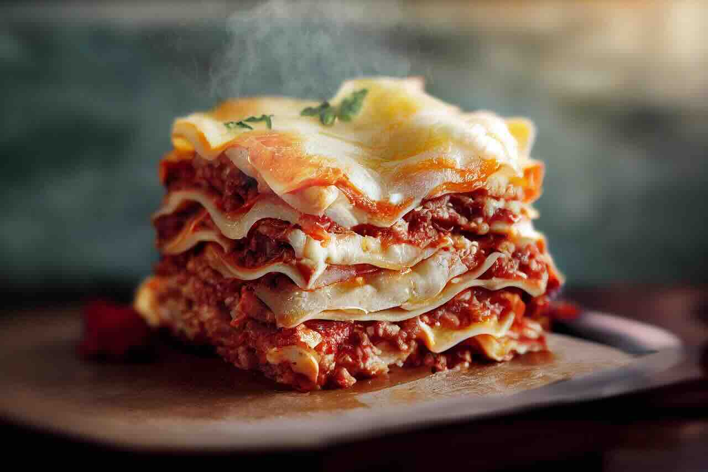

Lasagna
Go back

Description
Lasagna is a warm, cheesy pasta dish made by layering noodles with rich meat sauce, creamy cheese, and melted mozzarella. It is baked until bubbly and golden on top, making it a comforting meal that is great for family dinners or special occasions.
This simple recipe uses basic ingredients and easy steps, so it is perfect for beginners. The combination of tomato sauce, seasoned beef, and melted cheese creates a delicious and satisfying dish.
Ingredients
- 9 lasagna noodles
- 1 pound ground beef
- 1 jar pasta sauce
- 2 cups ricotta cheese
- 2 cups shredded mozzarella cheese
- 1/2 cup grated Parmesan cheese
- 1 egg
- 1 teaspoon salt
- 1/2 teaspoon black pepper
Steps
- Preheat the oven to 375°F (190°C).
- Cook the lasagna noodles according to the package directions, then drain them.
- In a pan, cook the ground beef until browned. Drain extra grease and stir in the pasta sauce.
- In a bowl, mix ricotta cheese, egg, salt, and black pepper.
- Spread a small amount of meat sauce on the bottom of a baking dish.
- Add a layer of noodles, then spread some ricotta mixture, meat sauce, and mozzarella cheese on top.
- Repeat the layers until all ingredients are used. Finish with mozzarella and Parmesan cheese on top.
- Cover with foil and bake for 25 minutes.
- Remove the foil and bake for another 10 minutes until the cheese is melted and golden.
- Let the lasagna cool for a few minutes before serving.